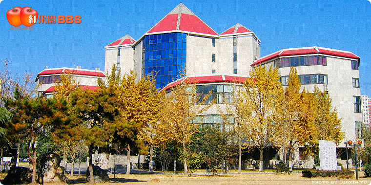
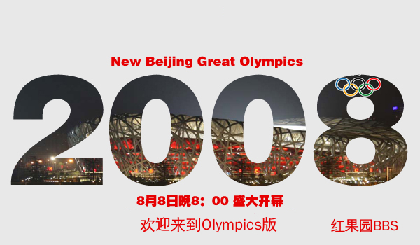
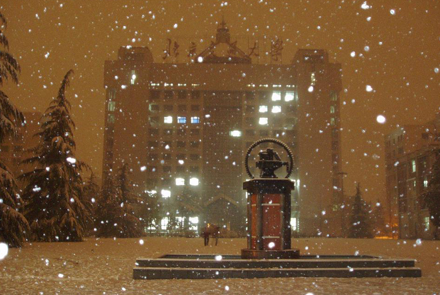
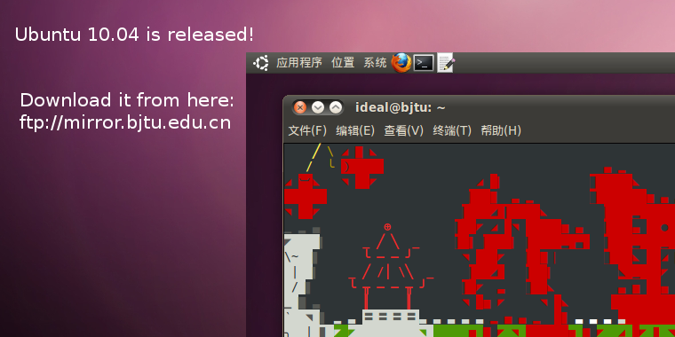
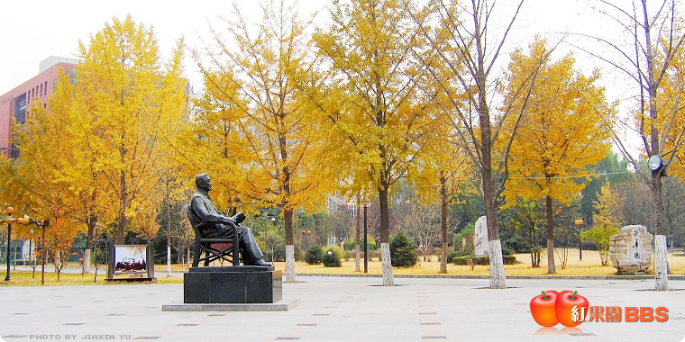

没有谁知道，当初拍这张照片的人，以及照片里的人，现在在何处..

已经忘了什么时候用过这张，或者只是我没有见到过..
这是另外类似的一张，秋天校园里的银杏
还是和银杏有关，除了没有两个山楂的logo

08年奥运会之前。看下面几个字的痕迹，应该是我当时用gimp加的..
切换计费系统，忘记在哪一年了，忘记这张有没有用过..
08年地震，aid临时加上的..

我不知道这是哪一年的冬天
我同样不知道这是哪一年的春天
09年毕业时，完全忘了这是谁做的..
在这之前一年的毕业时节，我同样忘了为何如此感慨，从网上找了张图..
毕业前买过两件站衫
后来开学了，那时也有喷泉吧
xingbin，如今他还在学校。我从这里知道有妙峰山这个地方
09年九月开学后红果园终于开放，可惜时过境迁。开学那天我在学苑宿舍写mplayer标签转换的无用补丁
很快过年了，对当时的寒假完全再没有印像
我至今没有明白，这句话的含义
就像我至今不懂舞蹈

甚至还有这些
甚至还有无法了解无法忘记的你
然后又有很多人离开

然后再见，那些见证了你的青春，挣扎，悲喜的人们
绝大多数图片，由其他同学为红果园设计，版权归属各自创作者所有。
使用impress.js。
ideal @ 2012-09-14